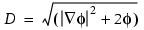

The Automatic algebraic turbulence model (Ref. 1) removes the need for any user-defined velocity or length scale. A velocity scale is taken to be the cell velocity.
A length scale is calculated from the following equation:
|  | (1) |
|---|
where ∇ϕ = −1 with ϕ = 0 at a wall.
These length and velocity scales (a scale for each grid cell) are then used in conjunction with classical boundary layer wall functions (see “Near Wall Treatment”) to determine cell turbulent viscosities.
This model, unlike the algebraic model, results in a turbulent viscosity that varies from cell-to-cell in the bulk flow.